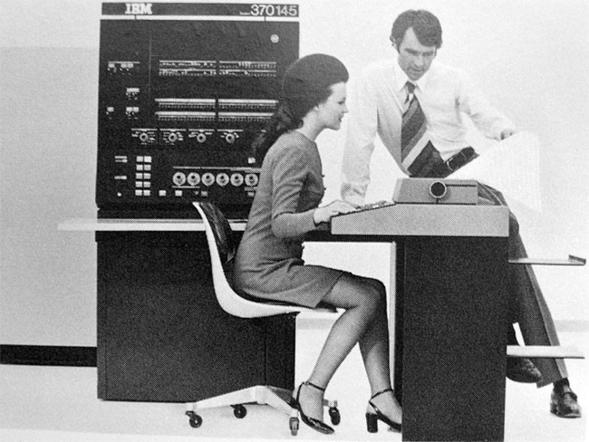
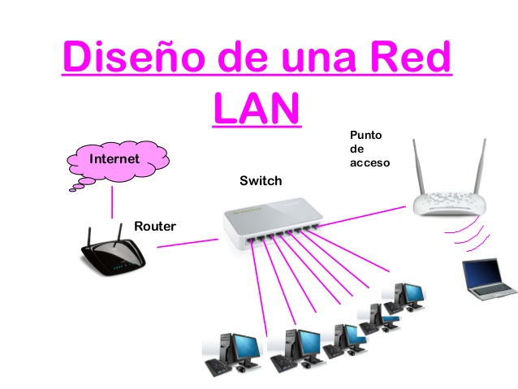
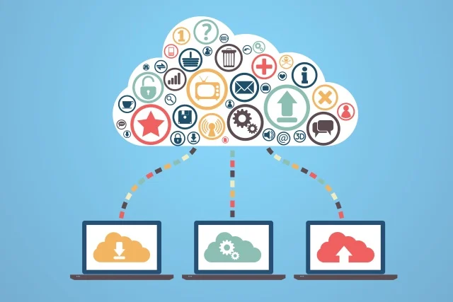
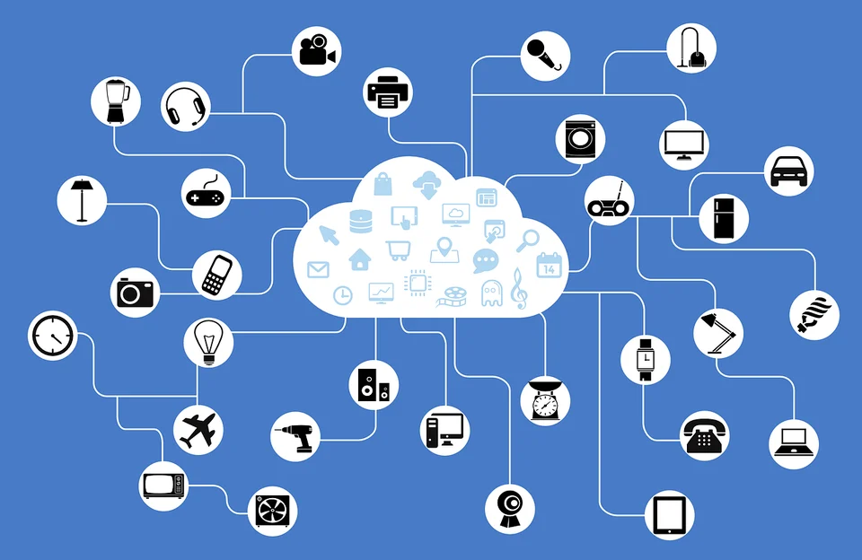
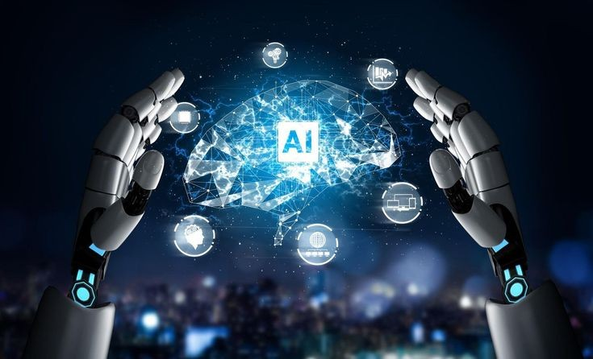

| Año | Título | Concepto | Imagen |
| 1960 | Mainframes y terminales |
Los mainframes son computadoras esenciales en la evolución de la informática moderna, aunque desconocidas para muchos. Desde su creación por IBM hace 50 años, han evolucionado enormemente, pasando de usar válvulas de vacío a transistores, y de ocupar grandes espacios a ser gestionados remotamente. Los primeros ordenadores del siglo XX eran calculadoras básicas, utilizadas principalmente por investigadores para acelerar cálculos matemáticos. IBM comenzó a fabricar computadoras en los años 30, como el IBM 801, que automatizaba tareas bancarias. Sin embargo, el primer "mainframe" real fue el Harvard Mark I, desarrollado por IBM y la Universidad de Harvard en 1944. Este gigantesco equipo realizaba cálculos aritméticos complejos y utilizaba tarjetas perforadas para entrada y salida de datos. En los años 50, IBM continuó avanzando con el desarrollo del SSEC y, más notablemente, el IBM 701 en 1952, un sistema clave para la historia de la informática. Este fue el primer sistema de procesamiento de información digital, permitiendo almacenar programas en memoria interna, marcando el inicio de la informática moderna y el fin de las tarjetas perforadas. |
 |
| 1970 | Redes de área local LAN |
Una red de área local (LAN) es una red limitada a una pequeña área geográfica, como un edificio, para conectar dispositivos como computadoras, impresoras y servidores. Originadas en la década de 1970, las primeras LAN revolucionaron la comunicación de datos al sustituir conexiones físicas directas y medios de almacenamiento extraíbles. Las LAN utilizan Ethernet, desarrollado por Robert Metcalfe en Xerox PARC, o WiFi para conectar dispositivos, y pueden incluir conmutadores en redes más grandes para gestionar el tráfico de datos. Las VLAN, implementadas en los años 90, permiten dividir una red física en múltiples redes lógicas, facilitando la gestión y seguridad en redes complejas. Las LAN son distintas de las redes de área amplia (WAN), que conectan múltiples LAN a través de grandes distancias. A medida que Internet creció, las LAN se convirtieron en la base fundamental para la interconexión global y el acceso a recursos compartidos. |
 |
| 1980 | Cliente - Servidor |
Con el avance de la tecnología de microprocesadores y redes LAN, las computadoras personales (PC) adquirieron suficiente capacidad para realizar tareas de forma independiente, lo que llevó al surgimiento del modelo Cliente-Servidor. En este modelo, las PC actúan como clientes que manejan la interfaz de usuario y ciertas operaciones, mientras que los servidores centralizados gestionan bases de datos y operaciones críticas. El protocolo TCP/IP facilitó la interconexión de sistemas diversos, y los sistemas de gestión de bases de datos relacionales (RDBMS) permitieron a los servidores manejar grandes volúmenes de datos y operaciones complejas. En el modelo Cliente-Servidor, los clientes interactúan con los usuarios y los servidores con los recursos compartidos, ambos con requerimientos diferenciados de recursos, en un ambiente heterogéneo. Los procesos pueden estar distribuidos en diferentes máquinas y la arquitectura permite una escalabilidad tanto horizontal como vertical, optimizando el tráfico de red al distribuir procesos y datos de manera eficiente. |
 |
| 2000 | Servicios web y aplicaciones en la nube |
Los servicios de nube son infraestructuras, plataformas y software ofrecidos por proveedores externos a través de Internet, permitiendo a los usuarios acceder a recursos informáticos sin gestionar la infraestructura. Incluyen IaaS (Infraestructura como Servicio), que proporciona recursos de computación, almacenamiento y red; PaaS (Plataforma como Servicio), que facilita el desarrollo y gestión de aplicaciones; SaaS (Software como Servicio), que ofrece aplicaciones en la nube junto con la infraestructura necesaria; y FaaS (Función como Servicio), que permite ejecutar pequeñas piezas de código sin preocuparse por la infraestructura. Estos servicios se basan en la virtualización de hardware y son esenciales para el almacenamiento en la nube y el big data. Los servicios web, originados en la década de 1990 con el protocolo HTTP y HTML, permitieron la comunicación estandarizada entre servidores y clientes, evolucionando hacia los servicios web y la computación en la nube, que transformaron el acceso y desarrollo de aplicaciones modernas. |
 |
| 2010 | Computación en la nube y movilidad |
La computación en la nube ofrece servicios tecnológicos como servidores, análisis de datos, administración de redes, bases de datos, almacenamiento y software a través de Internet. Los usuarios acceden a estos servicios mediante una computadora y conexión a la red, pagando según el paquete y proveedor. Los principales tipos de implementación de la nube son la nube pública, privada e híbrida. Los servicios de nube se dividen en Infraestructura como Servicio (IaaS), Plataforma como Servicio (PaaS) y Software como Servicio (SaaS). IaaS proporciona recursos informáticos y almacenamiento administrados por el proveedor, PaaS ofrece un entorno de desarrollo para aplicaciones, y SaaS permite el acceso a aplicaciones basadas en la web. La computación en la nube proporciona ventajas como reducción de costos, mayor rendimiento, y acceso a datos y aplicaciones desde cualquier lugar. |
 |
| 2020 | Inteligencia artificial y aprendizaje automático |
La Inteligencia Artificial (IA) es una tecnología que busca imitar las capacidades cognitivas humanas mediante algoritmos avanzados. Esta tecnología está transformando numerosos sectores, desde la salud hasta la educación, y se está integrando cada vez más en nuestra vida diaria a través de aplicaciones como asistentes virtuales y sistemas de reconocimiento facial. Según expertos, la IA se clasifica en varios tipos: sistemas que piensan y actúan como humanos, sistemas que piensan racionalmente y sistemas que actúan racionalmente. Las aplicaciones prácticas de la IA incluyen asistentes personales virtuales, optimización agrícola, detección de fraudes financieros, personalización en la educación y recomendaciones comerciales. También está impulsando el uso del big data y prometiendo avances en áreas como el transporte, la sanidad y el medio ambiente. A medida que la IA continúa evolucionando, se espera que juegue un papel central en la próxima revolución tecnológica. |
 |